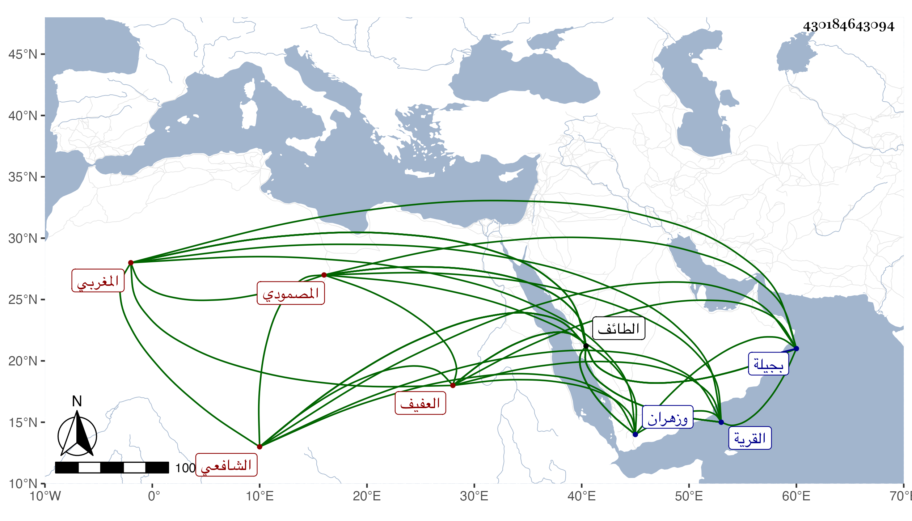

0902Sakhawi.DawLamic.ITO20230111-ara1.EIS1600.430184643094
Biography ID: 430184643094
321
عمر بن عبد الله بن محمد بن عيسى بن موسى بن عبد الرحمن شجاع الدين أبو حفص بن قاضي الطائف العفيف المغربي الأصل المصمودي الشافعي أمام قرية أبي الأخيلة بفتح الهمزة وسكون المعجمة وكسر التحتانية وجده موسى كان مالكيا ونشأ ابنه كذلك ثم لما مات قاضي الطائف ابن المرحل تحول شافعيا وولي قضاءها وتبعه بنوه . ولد سنة عشرين وثمانمائة تقريبا بالطائف وقرأ بها القرآن وتلا به لورش على عبد الرحمن المغربي وحفظ مختصر أبي شجاع ، وأجاز له في سنة ثلاث وعشرين وابن سلامة ونحوه ، ولما مات أبوه انتقل إلى القرية المذكورة فأقام بها ، ولازم الحج والزيارة ودخل نواحي بجيلة وزهران ولقيه البقاعي في سنة تسع وأربعين بمسجد عداس من بلده وقرأ عليه وعلى الجمال محمد ابن عيسى بن مكينة ومات .
